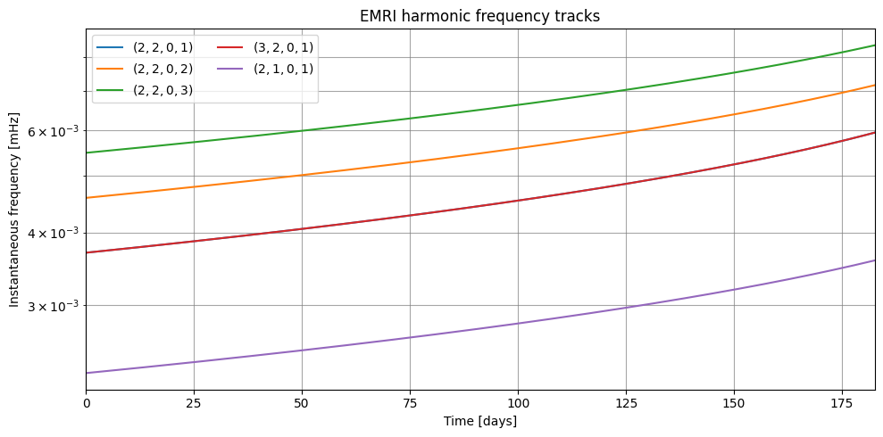
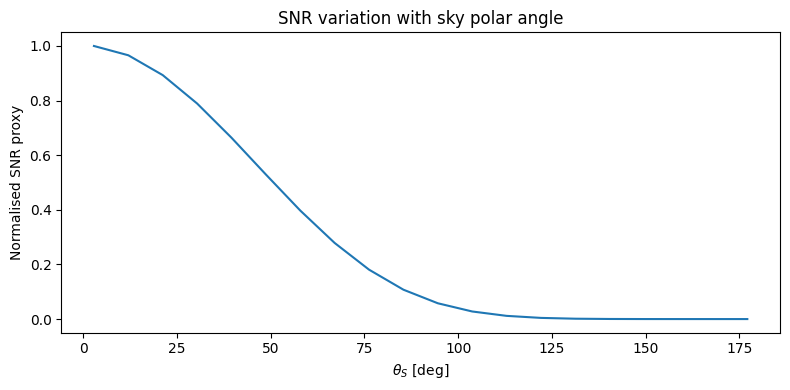

05 — Full EMRI Waveform Generation
This notebook demonstrates the top-level KerrEccentricEquatorialWaveform API.
Topics:
Generating \(h_+\) and \(h_\times\) with a single API call
The five-stage pipeline (data → trajectory → mode selection → amplitudes → summation)
Harmonic frequency tracks in the time–frequency plane
Parameter variation: spin, mass ratio, eccentricity
Pipeline Overview
Waveforms are constucted using the exact same method as FEW. only difference is the implementation, which is now in JAX instead of cupy.
KerrEccentricEquatorialWaveform
│
├─ [init] load_flux_data: coefficients loaded from multispline, JAX TriCubicSpline3D interpolators for Edot, Ldot
├─ [init] load_amplitude_data: raw HDF5 B-spline coefficients (6993 modes)
│
└─ __call__(m1, m2, a, p0, e0, **kwargs)
├─ EMRIInspiral: (t, p, e, $\Phi_{\phi}$, $\Phi_{\theta}$, $\Phi_r$) [JAX; JIT]
├─ select_modes: mode indices above power threshold
├─ AmplitudeInterpolator.evaluate: A[t, mode] [scipy/CPU]
├─ get_ylms_for_modes: Y[mode] [numpy]
└─ ModeSum: h(t) = Σ Y·A·e^{-iΦ} [JAX; JIT]
[1]:
import os
import numpy as np
import matplotlib.pyplot as plt
import jax
import jax.numpy as jnp
import time
jax.config.update("jax_enable_x64", True)
from dotenv import load_dotenv
load_dotenv()
DATA_DIR = os.getenv("FEW_DATA_DIR")
print(f"FEW_DATA_DIR = {DATA_DIR}")
from fewtrax import KerrEccentricEquatorialWaveform
print("Building waveform generator…")
t0 = time.perf_counter()
wf = KerrEccentricEquatorialWaveform(
data_dir=DATA_DIR,
mode_selection_threshold=1e-5,
dense_steps=150,
)
print(f"Loaded in {time.perf_counter() - t0:.1f} s")
FEW_DATA_DIR = /Users/bertd/Documents/PhD/LISA/Codes/FastEMRIWaveforms/src/few/data
Building waveform generator…
Loaded in 36.8 s
5.1 Generating a Waveform
The __call__ method accepts the same parameter set as FEW’s FastKerrEccentricEquatorialFlux.
[2]:
# Reference parameter set
params = dict(
M = 1e6, # primary BH mass [M_sun]
mu = 10.0, # secondary mass [M_sun]
a = 0.7, # dimensionless spin
p0 = 7.0, # initial semi-latus [M]
e0 = 0.4, # initial eccentricity
x0 = 1.0, # prograde
dist = 1.0, # luminosity distance [Gpc]
qS = 0.3, # source sky colatitude [rad]
phiS = 1.0, # source sky longitude [rad]
qK = 0.8, # spin colatitude [rad]
phiK = 0.5, # spin longitude [rad]
Phi_phi0 = 1.0,
Phi_theta0 = 2.0,
Phi_r0 = 3.0,
T = 0.5, # observation time [years]
dt = 10.0, # sampling interval [s]
)
t0 = time.perf_counter()
hp, hx = wf(**params)
elapsed = time.perf_counter() - t0
N = len(hp)
t_arr = np.arange(N) * params["dt"]
print(f"Waveform generated in {elapsed:.2f} s")
print(f"Samples: N = {N} ({N * params['dt'] / 3600:.2f} hours)")
print(f"|h+|_max = {float(jnp.max(jnp.abs(hp))):.3e}")
print(f"|h×|_max = {float(jnp.max(jnp.abs(hx))):.3e}")
Waveform generated in 25.25 s
Samples: N = 1577908 (4383.08 hours)
|h+|_max = 4.260e-22
|h×|_max = 4.425e-22
[ ]:
from fewtrax.summation.modes import to_frequency_domain
freqs, h_tilde = to_frequency_domain(hp + 1j * hx, dt=params["dt"])
fig, axes = plt.subplots(3, 1, figsize=(11, 9))
t_days = t_arr / 86400.0
scale = 1e20
axes[0].plot(t_days, np.asarray(hp) * scale, lw=0.5, label="$h_+$", color="C0")
axes[0].plot(t_days, np.asarray(hx) * scale, lw=0.5, label="$h_\\times$", color="C1", alpha=0.7)
axes[0].set_xlabel("Time [days]")
axes[0].set_ylabel(f"$h \\times 10^{{{int(np.log10(scale))}}}$")
axes[0].set_title(
fr"EMRI waveform: $M=10^6\,M_\odot$, $\mu=10\,M_\odot$, $a={params['a']}$, "
fr"$p_0={params['p0']}\,M$, $e_0={params['e0']}$, $T=0.5$ yr"
)
axes[0].legend()
# Zoom into first 3 days to see individual oscillations
mask_zoom = t_days < 3
axes[1].plot(t_days[mask_zoom], np.asarray(hp)[mask_zoom] * scale, lw=0.7)
axes[1].set_xlabel("Time [days]")
axes[1].set_ylabel(f"$h_+ \\times 10^{{{int(np.log10(scale))}}}$")
axes[1].set_title("First 3 days (zoom)")
f_Hz = np.asarray(freqs)
axes[2].loglog(f_Hz, np.asarray(jnp.abs(h_tilde)), lw=0.6)
axes[2].set_xlabel("Frequency [Hz]")
axes[2].set_ylabel(r"$|\tilde{h}|$")
axes[2].set_title("Frequency-domain strain")
plt.tight_layout()
plt.show()
[4]:
type(h_tilde)
[4]:
jaxlib._jax.ArrayImpl
[5]:
h_tilde.dtype
[5]:
dtype('complex128')
5.2 Harmonic Frequency Tracks
Each mode \((\ell, m, k, n)\) contributes a spectral line at the instantaneous frequency
As the orbit inspirals these frequencies chirp upward, producing the characteristic EMRI frequency track. These tracks are the key observable for the EMRI search.
[13]:
track_modes = [
(2, 2, 0, 1), (2, 2, 0, 2), (2, 2, 0, 3),
(3, 2, 0, 1), (2, 1, 0, 1),
]
fig, ax = plt.subplots(figsize=(10, 5))
for (l, m, k, n) in track_modes:
t_tr, f_tr = wf.get_harmonic_track(
l=l, m=m, k=k, n=n,
M=params["M"], mu=params["mu"], a=params["a"],
p0=params["p0"], e0=params["e0"], T=params["T"],
)
t_days_tr = np.asarray(t_tr) / 86400.0
f_Hz_tr = np.asarray(f_tr)
valid_tr = np.isfinite(f_Hz_tr) & (f_Hz_tr > 0)
ax.semilogy(t_days_tr[valid_tr], f_Hz_tr[valid_tr],
label=fr"$({l},{m},{k},{n})$", lw=1.5)
ax.set_xlabel("Time [days]")
ax.set_ylabel("Instantaneous frequency [mHz]")
ax.set_title("EMRI harmonic frequency tracks")
ax.legend(ncol=2)
ax.grid(True, which='both', alpha=0.7, color='grey')
ax.set_xlim([0, t_days[-1]])
plt.tight_layout()
plt.show()

5.3 Parameter Variation
Effect of Spin \(a\)
[ ]:
fig, axes = plt.subplots(1, 2, figsize=(12, 4))
for a_val in [0.0, 0.3, 0.7, 0.95]:
hp_a, hx_a = wf(**{**params, "a": a_val})
freqs_a, ht_a = to_frequency_domain(hp_a + 1j * hx_a, dt=10.0)
axes[0].loglog(np.asarray(freqs_a), np.asarray(jnp.abs(ht_a)),
lw=0.7, label=f"$a={a_val}$")
t_tr, f_tr = wf.get_harmonic_track(2, 2, 0, 1, M=params["M"], mu=params["mu"],
a=a_val, p0=params["p0"], e0=params["e0"], T=params["T"])
t_d = np.asarray(t_tr) / 86400
f_m = np.asarray(f_tr)
ok = np.isfinite(f_m) & (f_m > 0)
axes[1].semilogy(t_d[ok], f_m[ok], label=f"$a={a_val}$")
axes[0].set_xlim([1e-6, 1e-1])
axes[0].set_xlabel("Frequency [Hz]")
axes[0].set_ylabel(r"$|\tilde{h}|$")
axes[0].set_title("Frequency domain vs spin")
axes[0].legend(fontsize=8)
axes[1].set_xlabel("Time [days]")
axes[1].set_ylabel("$f_{2201}$ [Hz]")
axes[1].set_title("(2,2,0,1) frequency track vs spin")
axes[1].legend(fontsize=8)
plt.tight_layout()
plt.show()
Effect of Initial Eccentricity \(e_0\)
[ ]:
fig, ax = plt.subplots(figsize=(10, 5))
for e0_val in [0.0, 0.2, 0.4, 0.6]:
t_tr, f_tr = wf.get_harmonic_track(2, 2, 0, 1, M=params["M"], mu=params["mu"],
a=params["a"], p0=params["p0"],
e0=e0_val, T=params["T"])
t_d = np.asarray(t_tr) / 86400
f = np.asarray(f_tr)
ok = np.isfinite(f) & (f > 0)
ax.semilogy(t_d[ok], f[ok], label=f"$e_0={e0_val}$")
ax.set_xlabel("Time [days]")
ax.set_ylabel("$f_{2201}$ [Hz]")
ax.set_title("(2,2,0,1) frequency track vs eccentricity ($a=0.7$)")
ax.legend()
plt.tight_layout()
plt.show()
5.4 Inspecting the Sparse method
generate_sparse exposes the intermediate trajectory and amplitude arrays, useful for debugging or building custom summation schemes.
[9]:
sparse = wf.generate_sparse(**{k: v for k, v in params.items()
if k not in ("dist", "qS", "phiS", "qK", "phiK",
"Phi_phi0", "Phi_theta0", "Phi_r0")})
print("Sparse output keys:", list(sparse.keys()))
print(f"Trajectory length : {len(sparse['p'])} points")
print(f"Selected modes : {len(sparse['mode_inds'])}")
print(f"teuk_modes shape : {sparse['teuk_modes'].shape} (N_traj × N_modes)")
Sparse output keys: ['t', 'p', 'e', 'Phi_phi', 'Phi_theta', 'Phi_r', 'teuk_modes', 'l_arr', 'm_arr', 'k_arr', 'n_arr', 'mode_inds']
Trajectory length : 150 points
Selected modes : 117
teuk_modes shape : (150, 117) (N_traj × N_modes)
5.5 Sky-Angle Dependence
The observed strain \(h_+\) depends on sky angles \((\theta_S, \phi_S)\) and spin orientation \((\theta_K, \phi_K)\) through the pattern functions.
[10]:
from fewtrax.utils.harmonics import get_ylms_for_modes
theta_vals = np.linspace(0.05, np.pi - 0.05, 20)
snr_proxy = []
l_sel = sparse["l_arr"]
m_sel = sparse["m_arr"]
for th in theta_vals:
ylms_p, _ = get_ylms_for_modes(l_sel, m_sel, float(th), 0.5)
# SNR proxy: sum |Y * A|^2 over modes and trajectory
power = float(jnp.sum(jnp.abs(ylms_p)**2 * jnp.mean(jnp.abs(jnp.asarray(sparse["teuk_modes"]))**2, axis=0)))
snr_proxy.append(power)
fig, ax = plt.subplots(figsize=(8, 4))
ax.plot(np.degrees(theta_vals), np.array(snr_proxy) / max(snr_proxy))
ax.set_xlabel(r"$\theta_S$ [deg]")
ax.set_ylabel("Normalised SNR proxy")
ax.set_title("SNR variation with sky polar angle")
plt.tight_layout()
plt.show()

Summary
The KerrEccentricEquatorialWaveform class:
Method |
Description |
|---|---|
|
Loads flux and amplitude data; builds trajectory + summation objects |
|
Returns |
|
Returns trajectory dict with amplitudes; useful for custom pipelines |
|
Computes instantaneous frequency track for a single mode |
Next: 06_jax_features.ipynb — JIT compilation, vmap batching, and automatic differentiation for parameter estimation.